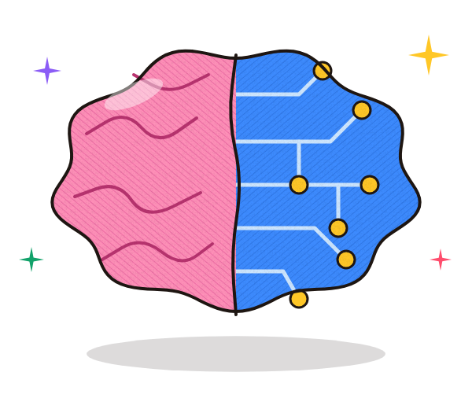

AI คืออะไร ?
คลิกเพื่อดูคำตอบ
Artificial Intelligence · ปัญญาประดิษฐ์
โปรแกรมคอมพิวเตอร์ที่เรียนรู้จากข้อมูล
เพื่อคิด ตัดสินใจ หรือสร้างงาน
ได้คล้ายมนุษย์
ข้อมูล➜เรียนรู้รูปแบบ➜คิด / ตัดสินใจ / สร้างงาน
